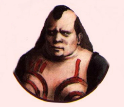

Juba's Corner: Information about the Town of Zoah
 |
{Juba:} The Town of Zoah is protected by a large surrounding stone wall. This wall keeps the monsters out and the inhabitants of Zoah safe. The town is also very near to the forests of Zoah. The forest is vital to their survival. It provides an abundant source of food. "Blessings from the gods," they call them. Although, most of the food is stored in the Holy District. We here in the Liberal District, don't get any of the good stuff. Maybe if I'm lucky, I'll be able to move to the Holy District during my lifetime. |
The Town of Zoah. Large surrounding walls keep monsters at bay. |